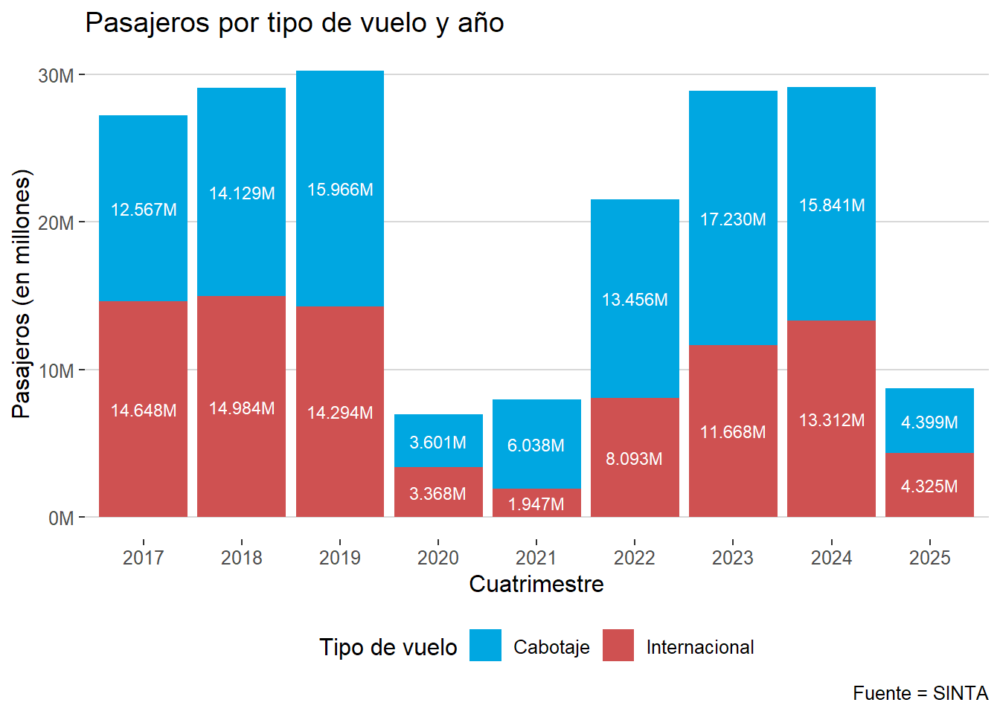
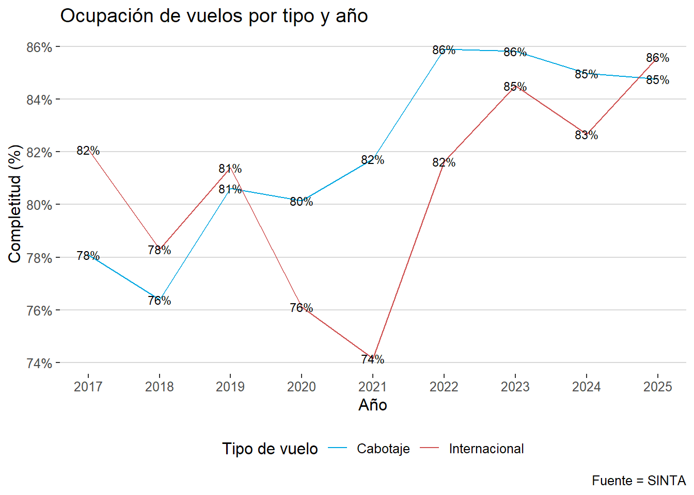
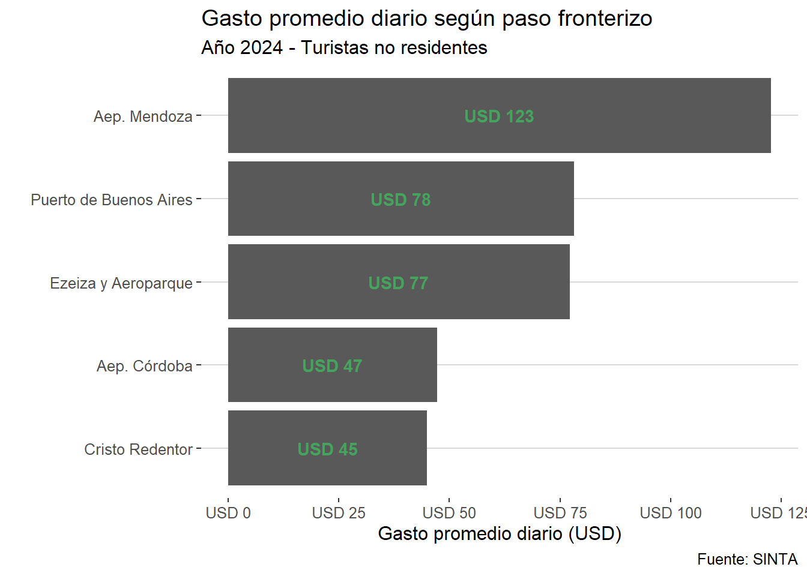

# cargar librerías ----
library(tidyverse)
library(scales) # Para formatear la capa de ejes
library(ggthemes) # Para formatear la capa de temas
# cargar datasets -----
## df_gastos_no_residentes ----
url_gastos <- ("https://datos.yvera.gob.ar/dataset/78b880c1-50d5-4a0c-9c87-7350e70548c2/resource/9a2c43e4-8037-4cf3-8559-bdab2a37ca94/download/gasto_total_promedio_diario_por_turista_en_usd_turistas_no_residentes_trimestral_segun_paso.csv")
df_gastos_no_residentes <- read.csv(url_gastos)
## df_vuelos_asientos_pasajeros ----
url_vuelos <- "https://datos.yvera.gob.ar/dataset/c0e7bc3d-553c-405c-8b32-79282b28ffd5/resource/03b4176f-a065-450a-b411-101d2a884720/download/vuelos_asientos_pasajeros.csv"
df_vuelos_asientos_pasajeros <- read.csv(url_vuelos)Ejercicio Práctico: Visualizando Movilidad y Gasto Turístico con ggplot2
Visualizando Patrones de Movilidad y Gasto en el Turismo Receptivo

En este ejercicio vamos a trabajar en la visualización de Patrones de Movilidad y Gasto en el Turismo Receptivo usando dos datasets del Sistema de Información Turística de la Argentina (SINTA)
- Gastos de Turistas No Residentes: Información trimestral sobre el gasto promedio según el paso fronterizo de ingreso.
- Vuelos, Asientos y Pasajeros: Datos diarios sobre el movimiento aéreo (cabotaje e internacional).
¿Qué vamos a aprender con este ejercicio?
Además de poner en práctica de manera integrada las transformaciones de dplyr agregamos algunas funciones muy útiles de otros paquetes que forman parte del tiduverso o son complementarios a él.
Formateo de etiquetas de las escalas: dentro de la capa de escalas tenemos un parámetro llamado labels. El paquete
scalesnos brinda varias funciones que nos permiten setear las etiquetas de los valores que vemos en los ejes para que sean más legibles. Vamos a usar tres de ellaslabel_number(),label_currency(),label_percent()Formatear fechas:
lubridatees una librería de la familiatidyverseque nos facilita para trabajar con fechas. En este ejercicio mostramos el uso deyear()en conjunto conas_date()que permite que extraer el año de una fecha cuya variable tiene formato character.Factores ordenados
forcatses otra librería del tidyverso que facilita el trabajo con variables de tipo factor. En este ejercicio nos vamos a familiarizar con una de sus funciones:fct_reorder()
üì¶ Setup: Cargá las librerias y los dataset
üëì Pegamos un vistazo a los datos
glimpse(df_gastos_no_residentes)Rows: 200
Columns: 6
$ indice_tiempo <chr> "2015-01-01", "2015-01-01",…
$ paso <chr> "Ezeiza y Aeroparque", "Aep…
$ gasto_total_en_usd_no_residentes <dbl> 841534824, 12268210, NA, 23…
$ gasto_promedio_diario_en_usd_no_residentes <dbl> 92.5, 87.5, NA, 89.8, NA, 9…
$ gasto_en_usd_por_turista_no_residente <dbl> 1313.5, 1110.4, NA, 464.7, …
$ observaciones <chr> "", "", "Paso que comenzó a…glimpse(df_vuelos_asientos_pasajeros)Rows: 5,841
Columns: 5
$ indice_tiempo <chr> "2017-01-01", "2017-01-01", "2017-01-02", "2017-01…
$ clasificacion_vuelo <chr> "Cabotaje", "Internacional", "Cabotaje", "Internac…
$ pasajeros <int> 25537, 31493, 37248, 41810, 34772, 39480, 36692, 3…
$ asientos <int> 37239, 46696, 46026, 51495, 42174, 49184, 44499, 4…
$ vuelos <int> 285, 247, 359, 254, 330, 245, 346, 242, 359, 249, ‚Ķüë©‚Äçüç≥ Preparaci√≥n de datos
Agregamos en ambas bases variables de resumen de fecha anio y cuatrimestre usando las funciones year() y quarter() de la librería lubridate que forma parte de tidyverse.
df_gastos_no_residentes <- df_gastos_no_residentes %>%
mutate(
# creamos variables para el año y el cuatrimestre
anio = year(as_date(indice_tiempo)),
cuatrimestre = quarter(as_date(indice_tiempo) )
)
df_vuelos_asientos_pasajeros <- df_vuelos_asientos_pasajeros %>%
mutate(
# creamos variables para el año y el cuatrimestre
anio = year(as_date(indice_tiempo)),
cuatrimestre = quarter(as_date(indice_tiempo) )
) üëâ Ejercicio 1
¿Cuantos pasajeros ingresaron por año en vuelos de cabotaje y vuelos internacionales?
Crea un gráfico de columnas apiladas y escribí una breve lectura del mismo.
Como la suma de pasajeros supera los millones podes usar el siguiente código en tu capa de escalas usando la función label_number() de la librería scales de esta manera:
scale_y_continuous(labels = scales::label_number(scale = 1e-6, suffix = "M"))
Ayuda
Dividí tu trabajo en pasos encadenados:
1 Hace las transformaciones agrupando por año y clasificación del vuelo y calculando la suma de pasajeros. No olvides setear el parámetro na.rm= TRUE en la suma para que no te de error en caso que haya datos nulos.
2 Llama a ggplot y diseña la capa de mapeo de datos poniendo en la x el año y en la y tu suma de pasajeros, usa como variable de relleno o fill la clasificación del tipo de vuelo.
3 Elegí la geometría de columnas y si te copas setea la posición como barras apiladas.
4 Facilita la lectura de los datos de cantidad de pasajeros con la capa de escalas.
5 Un gráfico siempre se lee mejor si le ponemos una capa de anotaciones indicando etiquetas (labs) para el título ejes y categorías de la variable de relleno.
6 Lindo es mejor que feo: Proba distintos estilos de theme que te ofrece el paquete ggthemes.
Respuesta
df_vuelos_asientos_pasajeros %>%
group_by(anio, clasificacion_vuelo) %>%
summarise(pasajeros = sum(pasajeros, na.rm = TRUE), .groups = "drop") %>%
ggplot(aes(x = as.factor(anio), y = pasajeros, fill = clasificacion_vuelo)) +
geom_col(position = "stack") +
scale_y_continuous(labels = scales::label_number(scale = 1e-6, suffix = "M")) +
scale_x_discrete(drop = FALSE)+
scale_fill_manual(values = c("Cabotaje" = "#00A7E1","Internacional" = "#cf5151"))+
labs(
title = "Pasajeros por tipo de vuelo y año",
x = "Cuatrimestre",
y = "Pasajeros (en millones)",
fill = "Tipo de vuelo",
caption = "Fuente = SINTA"
)+
# geometria de texto para agregar "los valores."etiquetas" a los valores
geom_text(
aes(label = scales::label_number(scale = 1e-6, suffix = "M")(pasajeros)),
position = position_stack(vjust = 0.5),
color = "white",
size = 3
) +
ggthemes::theme_hc()
üëâ Ejercicio 2
¿Qué tan llenos venían los vuelos de cabotaje e internacionales en cada año?
Realiza un gráfico con geometría de líneas (geom_line) para comparar ambos tipos de vuelos.
Para poder indicar el color de las lineas (correspondiente a las categorías en tipo de vuelo) utiliza el parametro color de dentro de la capa de mapeo de los datos
Para expresar la relación entre pasajeros y asientos con una etiqueta de porcentaje usar el siguiente código en tu capa de escalas usando la función label_number() de la librería scales de esta manera:
scale_y_continuous(labels = scales::label_percent(accuracy = 1))
Ayuda
Dividí tu trabajo en pasos encadenados:
1 Hace las transformaciones agrupando por año y clasificación del vuelo. Para obtener la tasa de ocupacios vas a teener que crear una nueva variable que divida la suma de pasajeros por la suma de asientos. No olvides setear el parámetro na.rm= TRUE en la suma para que no te de error en caso que haya datos nulos.
2 Llama a ggplot y diseña la capa de mapeo de datos poniendo en la x el año y en la y la tasa de ocupación, usa como variable de color para las lineas la clasificación del tipo de vuelo.
3 Elegí la geometría de lineas.
4 Facilita la lectura de los datos de cantidad de la tasa de ocupacxion usando la capa de escalas.
5 Un gráfico siempre se lee mejor si le ponemos una capa de anotaciones indicando etiquetas (labs) para el título ejes y categorías de la variable de relleno.
6 Lindo es mejor que feo: Proba distintos estilos de theme que te ofrece el paquete ggthemes.
Respuesta
df_vuelos_asientos_pasajeros %>%
group_by(anio = anio, clasificacion_vuelo) %>%
summarise(asientos = sum(asientos,na.rm = T),
pasajeros = sum(pasajeros,na.rm = T),
.groups = "drop") %>%
mutate(completitud = pasajeros/asientos) %>%
ggplot(aes(x = anio, y = completitud, color = clasificacion_vuelo)) +
geom_line() +
scale_y_continuous(labels = scales::label_percent(accuracy = 1)) +
scale_x_continuous(breaks = unique(df_vuelos_asientos_pasajeros$anio))+ # breakes label para cada año explicito
scale_color_manual(values = c("Cabotaje" = "#00A7E1","Internacional" = "#cf5151"))+
labs(
title = "Ocupación de vuelos por tipo y año",
x = "Año",
y = "Completitud (%)",
color = "Tipo de vuelo",
caption = "Fuente = SINTA") +
geom_text(
aes(label = scales::label_percent(accuracy = 1)(completitud)),
color = "black",
size = 3
)+
ggthemes::theme_hc()
üëâ Ejercicio 3
¿Por qué paso entraron los turistas que tuvieron un gasto promedio mayor en 2024? Hace un gráfico de barras que muestre el ranking por paso. Para ordenar la variable por ranking vas a tener que convertir la variable paso en factor ordenado usando la función fct_reorder() que es parte de la librería forcats que como ya te estás imaginando…. pertenece a tidyverse. Lo hacemos así:
mutate(paso = fct_reorder(paso, gasto_promedio_diario_en_usd_no_residentes))
Además si tenes ganas de representar los dolares como moneda podes usar label_currency() de scales de la siguiente manera:
scale_y_continuous(labels = scales::label_currency(prefix = "USD ", accuracy = 1))
Ayuda
Dividí tu trabajo en pasos encadenados:
1 Hace las transformaciones filtrando por año y agrupando por paso. Luego hace el promedio de gasto_promedio_diario_en_usd_no_residentes)
El truco para que luego ggplot entienda que tiene que ordenar los pasos fronterizos por gasto_promedio_diario_en_usd_no_residentes es usar la función fct_reorder()
2 Llama a ggplot y diseña la capa de mapeo de datos poniendo en la x el los pasos y en la y el gasto promedio.
3 Elegí la geometría de columnas y gira las coordenadas con coord_flip() para que los pasos queden como una listita
4 Ahora solo algunas cuestiones de hermoseo:
setea la escala para que muestre el simbolo como moneda scale_y_continuous(labels = scales::label_currency(prefix = “USD”, accuracy = 1))
Agrega los títulos con labs y si te animas una gemotría de texto
Podes elegir el tema que más te guste para finalizarlo
Respuesta
df_gastos_no_residentes %>%
filter(anio == 2024) %>%
group_by(paso) %>%
summarise(gasto_promedio_diario_en_usd_no_residentes = mean(gasto_promedio_diario_en_usd_no_residentes, na.rm = TRUE),.groups = "drop") %>%
mutate(paso = fct_reorder(paso, gasto_promedio_diario_en_usd_no_residentes)) %>%
ggplot(aes(
x = paso,
y = gasto_promedio_diario_en_usd_no_residentes
)) +
geom_col() +
coord_flip()+
scale_y_continuous(labels = scales::label_currency(prefix = "USD ", accuracy = 1)) +
labs(
title = "Gasto promedio diario según paso fronterizo",
subtitle = "Año 2024 - Turistas no residentes",
x = "", y = "Gasto promedio diario (USD)",
caption = "Fuente: SINTA") +
geom_text(
aes(label = scales::label_currency(prefix = "USD ", accuracy = 1)(gasto_promedio_diario_en_usd_no_residentes)),
position = position_stack(vjust = 0.5),
color = "#45a35d",
fontface = "bold"
)+
ggthemes::theme_hc()